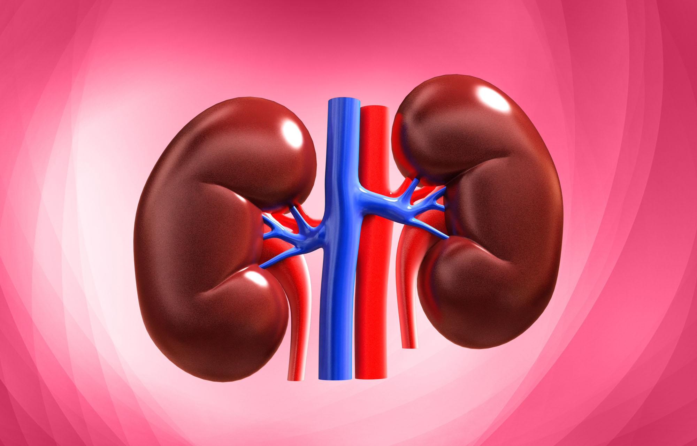

KIDNEY How does the kidney work in support of the body? Daniel Aikins Oct, 2022  Your kidneys purge the extra fluid and waste from your body. Your kidneys maintain a healthy balance of water, salts, and minerals in your blood, including sodium, calcium, phosphorus, and potassium, in addition to filtering out acid produced by your body's cells. Here is how the kidneys carry out their crucial function: Blood flows from the heart through an artery to the kidneys. Blood is cleansed by circulating through many microscopic blood filters. Urinary waste travels via the ureter and is then collected in the bladder. Blood is reintroduced to the bloodstream through veins after being newly cleaned. How do my kidneys' blood vessels move blood? Through the renal artery, blood enters your kidney. Up until the blood reaches the nephrons, this huge blood channel divides into smaller and smaller blood vessels. Your blood is filtered by the glomeruli, which are microscopic blood vessels, in the nephron before leaving your kidney through the renal vein. Diseases liable to the kidneys? The most common cause of kidney disease is diabetes. Types 1 and 2 diabetes both. However, renal failure can also cause damage that is exacerbated by obesity and heart disease. Problems with the urinary system and inflammation in different kidney regions can potentially contribute to long-term functional deterioration. How is Kidney Disease Treated? The most common way of treating Kidney diseases is the DIALYSIS treatment When your kidneys reach end-stage renal disease (ESRD), also known as kidney failure or stage 5 CKD, they are no longer able to filter and cleanse the blood as normally would healthy kidneys. Without treatment, the body will build up harmful toxins and waste. You currently need dialysis therapy to prolong your life until a kidney transplant can be performed. Diabetes and high blood pressure increase your risk of developing renal failure, which may eventually call for dialysis or a kidney transplant. Through the removal of surplus fluid from the body, dialysis aids in blood pressure control. Your kidneys' lifespan could be extended by working with your doctor to maintain good blood pressure and blood sugar levels. Different renal function tests are used by doctors to evaluate the condition of your kidneys. A person frequently begins dialysis treatment when their GFR drops below 15, which denotes that they have lost between 85 and 90 percent of their kidney function. You can maintain renal function for as long as is practical with regular monitoring and early identification of CKD. This will also help you and your doctor get ready for ESRD treatment when it becomes necessary. How can i keep my kidneys healthy? Make nutritious meal selections. Include exercise in your daily regimen. Aim to maintain a healthy weight. Get adequate rest. Stop using tobacco. Limit your alcohol consumption. Look into stress-relieving activities. Control heart disease, diabetes, and excessive blood pressure.